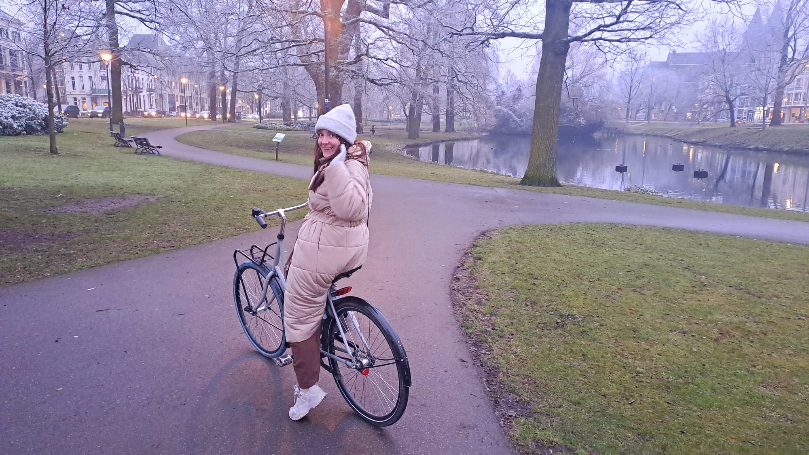

Rhodé Visser
designnerd
Hi, My name is Rhodé. I am an artist and social designer. I want to design immersive experiences, systems, and methodologies that help the world become softer, more nuanced, more collaborative, less overwhelming, and more inviting for others to build alongside.
I have a special place in my heart for: cats, playing (computer) games, internet, pastries, experimental sounds, geneology, history, my friends, my boyfriend.